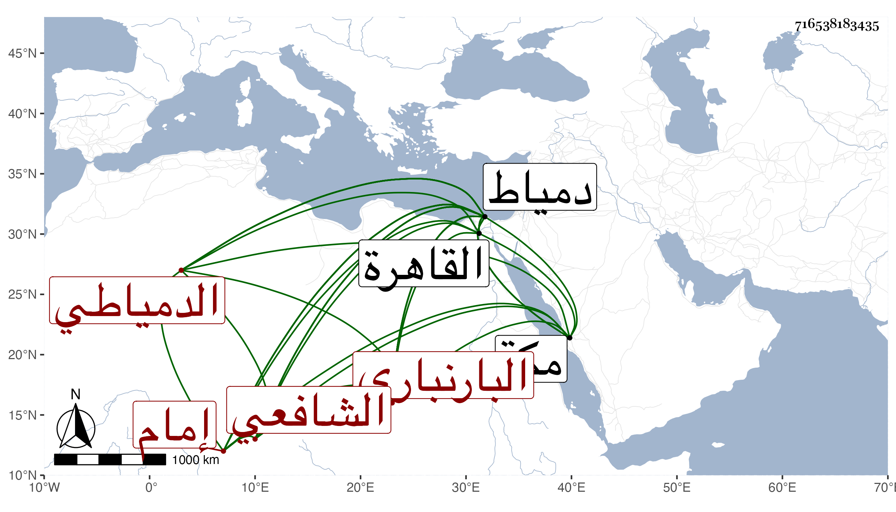

0902Sakhawi.DawLamic.ITO20230111-ara1.EIS1600.716538183435
Biography ID: 716538183435
501
محمد بن علي بن عبد الله بن محمد بن أحمد الشمس أبو العطاء البارنباري الدمياطي الشافعي إمام المعينية بدمياط ويعرف بالشارمساحي . ولد بعد العشرين وثمانمائة تقريبا ببارنبارة قرية بالقرب منها قرية تعرف ببني عطية الدنجاوي ولذا يقال له العطائي أيضا ثم انتقل منها مع أبويه إلى دمياط فقطنها وحفظ القرآن والشاطبية والمنهاج والألفية والملحة ، وعرض على الشمس بن الفقيه حسن وعليه قرأ البخاري واشتغل في الفقه والعربية وكذا عرض على الفقيه موسى بن عبد الله البهوتي الدمياطي واشتغل أيضا عند النور المناوي والطيبي وسمع الحديث على الفرياني بل وقرأ على شيخنا في سنة إحدى وخمسين بعض الصحيح وتلا لنافع وحمزة على الشمس محمد البخاري القدسي تلميذ ابن الجزري وغيره حين قدم عليهم دمياط ، وارتحل لمكة فقرأ على كل من الزين بن عياش ومحمد الكيلاني لأبي عمرو وبعضها على الديروطي وعمر النجار وسمع على اللذين قبلهما الجمع ، وتصدى في دمياط لتعليم الأبناء ثم ولي إمامة المدرسة المعينية أول ما فتحت وصاهر الشهاب الجديدي على ابنته ، وحضر عندي في بعض قدماته القاهرة مجالس الإملاء بل كتب من تصانيفي جملة وقرأ علي منها واغتبط بها وهو إنسان حسن طوال فاضل حسن الخط مديم التلاوة حريص على الخير ، له نظم كتبت عنه منه مدحا في وغير ذلك .
